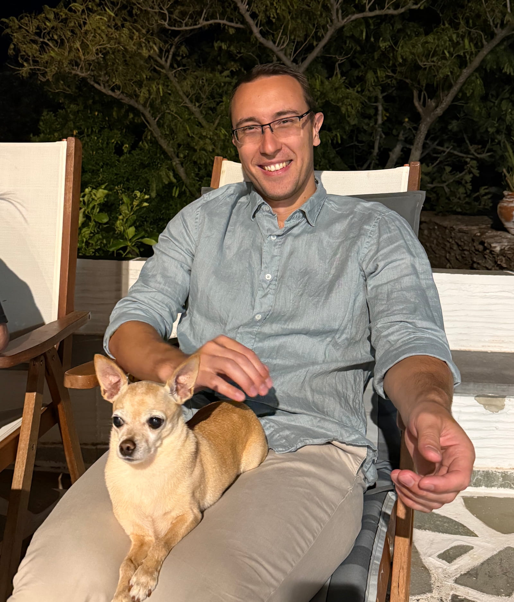
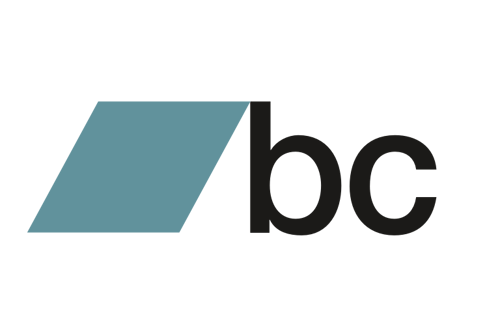
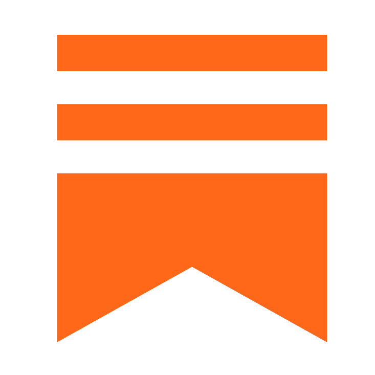

I believe we should go online to explore, have fun, and enrich ourselves. Not dull our senses with meaningless content.
In this space I'll attempt a harmonic blend of elements that outline my experiences.
Please enjoy.
Personal background
I was born in July 1992 in Ukraine as Bilyk Alexander, and raised in a small village two hours out of Kiev. I moved to Athens, Greece when I turned 9. A few strange and out-of-place years later, I ended up studying Management Science and Technology (formerly Information Management) at Democritus University of Thrace (formerly TEI Kavalas), from where I graduated officially in 2016, but not before changing my thesis subject three times. Along the way I became a permanent resident of Athens and adopted the Greek surname Kyriakou.
A few things I've realized about myself so far: I enjoy being around animals, doing physical activities in nature, and exploring anything beautiful the world has to offer. I've made a habit of learning and being curious about life, which I consider my strongest motivating force.
I'm a big fan of technology and its potential to improve our world. In my free time, I enjoy tinkering with the digital spaces, learning new skills, and staying up-to-date with technological news. Overall, I strive to live a balanced life, and maintain ways of being that will make my future self proud of its past.

Professional work-life
My first experience in a work environment was interning in the HR department of my University, followed by a gig as a Production Assistant for an event company. In parallel I was working as Technical Support to local pharmacies and doctors' offices. Around late 2017, I joined a language center in Piraeus as a Moodle developer, where I had the opportunity to create the fastschool English elearning platform. After a year or so, I started teaching computer skills to adults in order to obtain the ECDL certificate.
In 2019 served in the Greek army, and was stationed in the beautiful Nisyros island as part of the 2nd and 3rd office. Perhaps uncommonly, I had a positive experience in the military, wherein I was grateful to meet a lot of interesting people and some fun parts of myself.
In late 2019 and early 2020, stopped teaching computer skills as I wanted to focus more on developing elearning platforms and courses, which attempt sadly didn't materialize. Tinkering with web development existed always in the back of my mind, thus started looking into other positions that these skills could be applied. Without being dedicated front-end / back-end developer, as didn't feel that it's something I would like to do full-time. In the beginning of 2020 joined the GIM Agency as a SEO Specialist, after discovering that there's a gap in the market for people that can combine technical skills with marketing. Learned the basics of SEO and marketing in a week and thankfully got hired. Worked there for 2 years, at that time had my first corporate experience. Learned a lot about SEO, marketing, project management, client handling and various other skills.
After a while felt stagnant and a strong feeling of wanting to develop myself professionally, resulting joining Relevance where I focused on Technical SEO and extensive audits. Few months in, natural progress of things, dived more into Analytics and Visualization. It was a year filled with projects from multiple sectors and a big variety of websites of all sizes. An intense and quite interesting year, which unfortunately had to come to an end cause of eventful intra-company dynamics. Stayed out of the corporate world for a year, keeping up with personal life, readings, and skilling-up on analytics towards BI.
In September (rounding up from late August) of 2024 I joined Ferryscanner, as the in-house SEO Project Manager/Owner, in more fancy terms Organic Growth Product Manager. A position that my agency colleagues joked would fit me like a glove, cause I'd be free to go really, really in-depth. They were right. The whole product got reworked with bots in mind, and everything involving the end user. Many challenges, including progressive adoption of quality fundamentals rose over that time. In May of 2026 decided to close that chapter, as some internal issues where persisting and keep ignoring them or going along wasn't an option anymore, if having clean conscience was in the picture (which always is). For a more in-depth exploration of my career journey, check my resume.
May the future be worth looking forward to.
Platforms where I'm semi-active

Bandcamp
SubstackPurpose of alexanderkyriakou.eu
I want to materialize some technical ideas, and express them in an unconfined way through thoughts. In a sense, to stop being a passive consumer of information, and start creating. Through this process I aim to learn, challenge and explore the infinite amount of things. The initial idea for the website arose somewhere in early COVID times (summer of 2020), and materialized in mid-October of 2025.
But, but - Alex you can spew countless pages with so many tools, why you're not doing that? We're not in the 90s anymore. Sure. But where's the fun in that?
My goal is to develop this website to a mix of blog and portfolio, simple as possible without any unnecessary clutter, while providing a calming (or retro) digital experience. Everything is handcrafted, the content and to a high extent the code. Maybe it's naive, but I want to keep it this way (parts that are generated, will be disclaimed).
The .eu domain was chosen to reflect my support for life in the European Union.
Future plans
Some initial ideas for the website, obviously subject to change. Hope I'll stick to them, without extreme delays.
- Mini projects - tools
- Opinion pieces
- Playing with frameworks
- Implementing an OS CMS or a custom one
- Optimizing existing approaches
- Fixing various present bugs
- More correct use of HTML & CSS
- More semantic HTML use
- Accessibility fundamentals
- Better informational structure
- Local hosting
- Pages in Greek
- Dark mode and Themes
- Give it a 'character', and many more fun things to come
Privacy & Cookie Policy
No analytics, no ad services, no tracking cookies on this website; sowwy. The only cookie you may get is a security one from Cloudflare (cf_clearance), set when you pass the human check on the contact page.